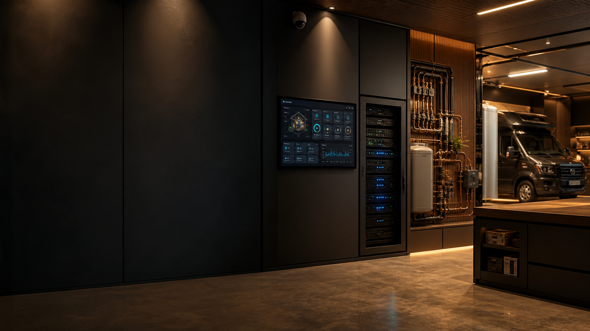

Maisons intelligentes
Home Assistant, capteurs, éclairage, énergie, présence, scènes et interfaces simples pour les routines quotidiennes.

Studio de systèmes intelligents
Smart spaces. Private systems. Real automation.
Des systèmes sur mesure pour maisons intelligentes, serveurs privés, caméras locales, vans connectés et tableaux de bord qui servent vraiment.
Services
Le travail commence par des besoins réels: voir, contrôler, automatiser, sécuriser et garder les données proches de vous.
Home Assistant, capteurs, éclairage, énergie, présence, scènes et interfaces simples pour les routines quotidiennes.
Caméras IP, Frigate, détection locale, alertes propres et accès privé sans transformer la maison en produit cloud.
Docker, Linux, sauvegardes, DNS, VPN, accès distant et bases fiables pour héberger vos propres outils.
Énergie, réseau, surveillance, tableaux de bord et automatisation pour véhicules aménagés, ateliers mobiles et projets pilotes.
Démonstration
Cette démonstration montre comment les capteurs, caméras, serveurs et dashboards peuvent être organisés autour d'une logique claire.
Capteurs de présence, éclairage, température, énergie et scènes Home Assistant avec logique locale.
Projet en vedette
Un projet pilote personnel autour d'une ambulance connectée: énergie, réseau, caméras, accès VPN, interfaces embarquées et automatisations pensées pour bouger.
Carte terrain
Une carte stylisée des trajets qui inspirent les systèmes mobiles: longues routes, retours par les États-Unis, vols, boucles locales et arrivée vers Montréal.
Long trajet routier vers la Floride et retour: parfait pour penser alimentation, réseau mobile, caméra et accès distant.
Processus
Ce qui doit être vu, contrôlé, automatisé ou protégé.
Réseau, appareils, capteurs, permissions et contraintes physiques.
Un prototype limité, testable et compréhensible avant de grossir.
Documentation, accès, sauvegardes et interfaces utilisables.
Ajustements après usage réel, pas seulement après un plan parfait.
Journal technique
Pas de fausses études de cas. Le journal sert à documenter les essais, pilotes et décisions techniques au fur et à mesure.
Réseau mobile, caméras, dashboard et accès privé dans un véhicule qui doit rester utilisable hors du garage.
Détection locale, zones utiles, alertes propres et stockage maîtrisé pour éviter la dépendance au cloud.
Héberger des services, exposer le minimum, sauvegarder les données et garder un accès distant clair.
Stack
La stack n'est pas une religion. Elle se choisit selon le budget, la fiabilité requise, la confidentialité et la maintenance.
Contact
Décrivez ce que vous voulez connecter, automatiser ou sécuriser. Le formulaire prépare un courriel; rien n'est envoyé sans votre app de mail.